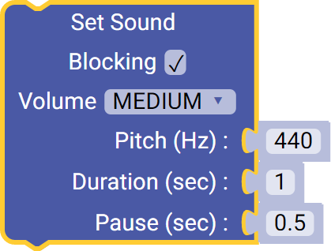
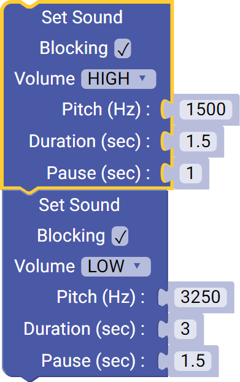
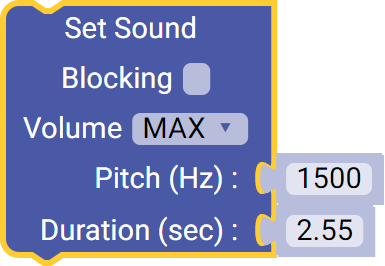
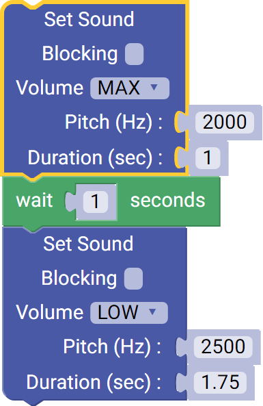

Sound Generator (45-2016)
The Sound Generator can generate a sound based on volume, pitch and duration. This sensor also can overwrite settings during a tone to change the pitch, volume, or extend the duration of the tone.
- Connect via I2C port.
List of available blocks:

Set Sound (Blocking)
Generate a tone based on Volume, Pitch, Duration of tone and Pause after the tone. Play a sound for a set duration, then wait for a specified amount of time before continuing on to the next block in the program.
- Volume - How loud or quiet a sound is. (Low, Medium, High, Max)
- Pitch - The frequency at which the tone is played ranges from 1 Hz - 5000 Hz.
- Duration - The length of the tone ranges from 0.1 sec - 65.5 sec.
- Pause - The length of time from the end of the current tone until the next block is executed.
Block:

Code Produced:
Setup:
sound = Fusion.sound(f)Code:
sound.setSoundBlocking(1, 440, 1000, 500)Example:

Code:
import Fusion f = Fusion.driver() sound = Fusion.sound(f) sound.setSoundBlocking(2, 1500, 1500, 1000) sound.setSoundBlocking(0, 3250, 3000, 1500)
Set Sound
Generate a tone based on Volume, Pitch and Duration of tone. Play a sound for a set duration and continue on to the next block in the program.
- Volume - How loud or quiet a sound is. (Low, Medium, High, Max)
- Pitch - The frequency at which the tone is played ranges from 1 Hz - 5000 Hz.
- Duration - The length of the tone ranges from 0.1 sec - 2.55 sec.
Block:

Code Produced:
Setup:
sound = Fusion.sound(f)Code:
sound.setSound(3, 1500, 2550);Example:

Imports:
import Fusion import time f = Fusion.driver() sound = Fusion.sound(f) sound.setSound(3, 2000, 1000) time.sleep(1) sound.setSound(0, 2500, 1750)
Questions?
Contact Boxlight Robotics at support@BoxlightRobotics.com with a detailed description of the steps you have taken and observations you have made.
Email Subject: Fusion Blockly Sound Generator